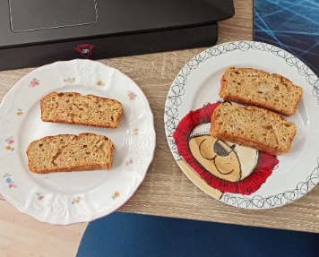

Home
Banana bread

Description
A fluffy, moist banana bread, infused with the aroma of cinnamon and packed with crunchy nuts, is sure to delight all your senses.
Ingredients
- wholegrain spelt flour: 160 g
- baking powder: 6 g
- cinnamon: 6 g
- vanilla sugar: 20 g
- bananas: 4 medium/bigger or 5 small pieces
- eggs: 3 pieces
- agave syrup: 20 ml
- ghee (clarified butter): 20 g
- walnuts: 50 g
- cashew nuts: 40 g
Steps
- Preheat the oven to 175°C.
- Mix flour with baking powder.
- Add cinnamon, vanilla sugar and mashed bananas, and mix.
- Add melted ghee, eggs and agave sirup, and mix.
- Finally, add chopped nuts (do not crush them completely because bigger pieces are much more tasty), and mix again.
- Pour the mixture into a baking dish greased with ghee and dusted with whole grain spelt flour.
- Bake for about 45 minutes, until the dough is cooked inside. Towards the end of baking, the temperature can be slightly increased
to allow the surface to brown.